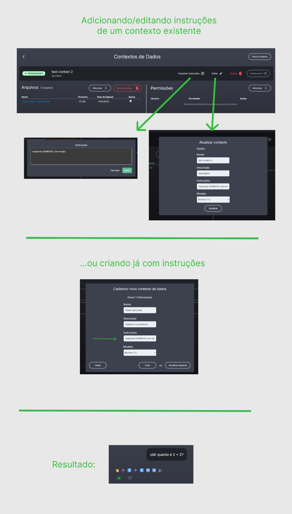
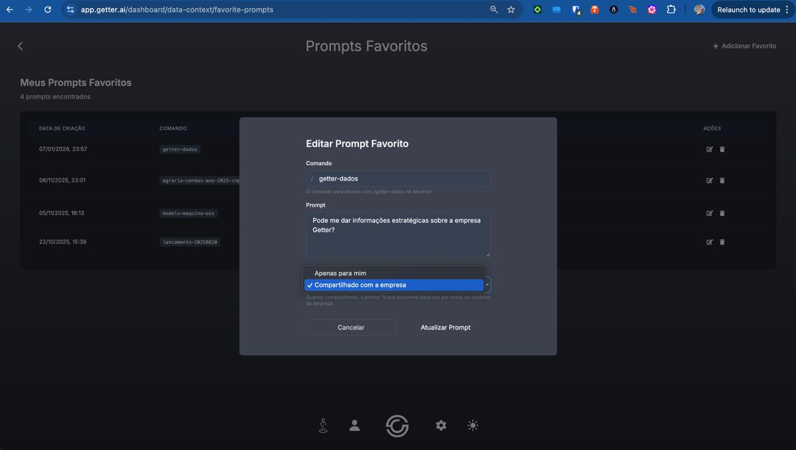

Ainda estamos com o mesmo status do último status quinzenal.
Como não temos quando iremos migrar para a nova cloud, os pontos abaixo ficam bloqueados como dependência:
Iniciar o uso do Menthor DB na nossa infraestrutura ainda está bloqueado pela mudança de cloud que o Michel está fazendo.
Como ainda não temos uma data para isso, essa task fica bloqueada.
Stack de observabilidade para a plataforma, bloqueada também pela migração de cloud.
É possível pensarmos em começarmos a usar Terraform para a nossa infraestrutura?
Isso daria mais liberdade para os times e consequentemente mais agilidade sem perder o controle de uso de boas práticas e padrões que o nosso time de infra tenha em mente.
Nosso objetivo é simples: Compartilhar aprendizados e comportamentos das ferramentas que usamos para ter a oportunidade de criar soluções cada vez mais eficazes.

Agora é possível adicionar um texto de instruções para os contextos de dados, que servirão de guia e molde para as respostas do Menthor.
Com isso, é possível ao usuário definir como ele quer que o Menthor interaja com ele, bem como o temperamento, nível de detalhamento das respostas, formatação, etc.
Também é possível passar informações base sobre aquele contexto e/ou os arquivos daquele contexto, como se os arquivos fossem capítulos de um livro e as instruções fossem o sumário desse livro.
Agora é possível compartilhar seus prompts favoritos com os outros membros da equipe.
